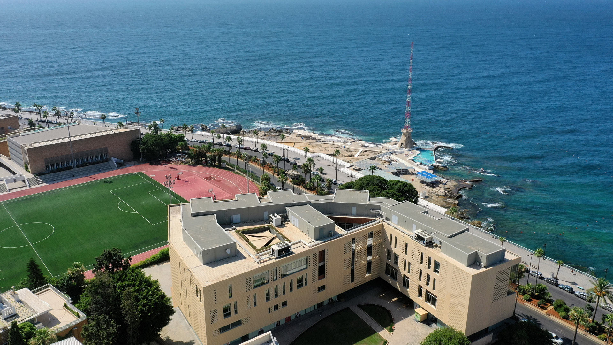
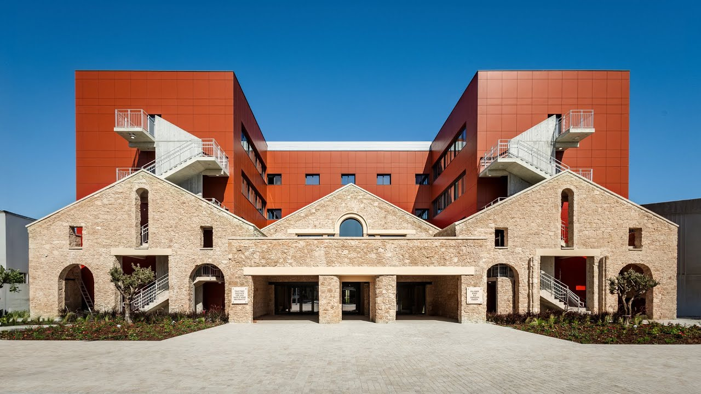

Business Education at AUB now holds two global accreditation crowns — AACSB and EQUIS — across both shores of the Mediterranean.
EQUIS accreditation is not simply received. It is earned.
It follows years of self-assessment, evidence gathering, documentation, peer review, and dialogue with students, faculty, staff, alumni, employers, and partners.
For Business Education at AUB, the process brought together work across Beirut and Paphos, demonstrating not only what has been achieved, but how the schools continue to improve.
EFMD Quality Improvement System (EQUIS) accreditation is a globally recognised mark of excellence for business and management education. It involves rigorous evaluation based on criteria such as academic programmes, faculty quality, research output, internationalisation and corporate relevance.
A connected strategic vision across Beirut and Paphos.
6-degree programs benchmarked internationally.
Faculty bridging research, teaching, practice.
Network across Europe, MENA and beyond.
Advisory boards drawn from MENA, Europe.
Responsible leadership, BSIS label 2024.
International-standard facilities across two shores.
Evidence-based reflection, continuous improvement.


Across Beirut and Paphos, AUB's business education community is built on a common academic vision. EQUIS accreditation recognizes the strength of this connection: two locations, aligned around quality, relevance, impact, and internationally benchmarked standards.
Rooted in the region. Connected across two shores. Benchmarked by the world.
Six perspectives on what changed the day EQUIS arrived.